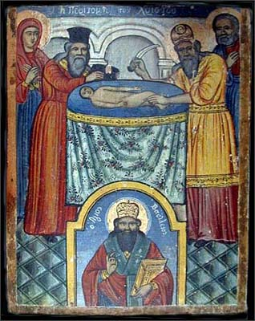

Белояр
Обрезание господне (расследование)
Почти каждый из жителей России знает, что 7 января – великий христианский праздник Рождества Христова. 14 января наступает другой большой и светлый праздник – Крещение Христово. И вот уже не столь большая часть населения, но уже и немалое его количество приноровилось нырять в ледяную прорубь. И не один раз окунаются, а целых три, да ещё с головой, да ещё после освящения воды батюшкой. Религия религией, но если для организма полезно, то на здоровье!
Шутки шутками, но тем не менее есть между этими христианскими праздниками ещё один день, о котором мало кто знает из ныряльщиков в прорубь и из стоящих в очереди за баночкой освящённой крещенской водицы.
Для тех, кто ещё не понял, на что я намекаю, охотно поясню. Речь идёт о великом непереходящем (без плавающей даты празднования) празднике Обрезания Господня. Удивлены? Не знали о таком? Тогда садитесь поудобнее, я начинаю своё небольшое расследование. Если имеется пробел в христианском религиозном образовании относительно этого праздника (проверено), то приходится работать за других, т.е. за тех, в чьи обязанности входит информирование прихожан об этом.
Итак, начнём с информации, предоставленной крупным христианским интернет-ресурсом "Завет.ру"(www.zavet.ru) по поводу заявленной темы:
1 (14) января, великий непереходящий праздник. На восьмой день после Рождества младенец, рожденный Марией, по ветхозаветному обычаю, принял обрезание и получил имя Иисус, возвещенное Архангелом Гавриилом в День Благовещения Пресвятой Деве.
"Православие.ру" (www.pravoslavie.ru) дополняет эту информацию следующим абзацем:
ПРАЗДНИК ОБРЕЗАНИЯ ГОСПОДНЯ. Стихира празднику Обрезания Господня.
Сходяй Спас к роду человеческому, прият пеленами повитие, не возгнушася плотскаго обрезания, осмодневен по Матери, безначальный по Отцу. Тому вернии возопиим: Ты еси Бог наш, помилуй нас.
Стихиры (греч. – многостишие) – песнопение, состоящее из множества стихов, написанных одним размером. Первоначально это ветхозаветные поэтические писания, по образцу которых составлялись затем и христианские стихиры. Соответственно, в день праздника в церкви можно услышать песнопение о плотском обрезании.
Приведенная информация говорит о том, что праздник есть и его наличие не скрывается.
В православном календаре на 14 января выпадает двойной праздник:
14/1 - Обрезание Господне и память святителя Василия Великого. Тропарь. Обрезанию Господню, глас 1.
На Престоле огнезрачнем / в Вышних седяй со Отцем Безначальным и Божественным Твоим Духом. благоволил сей родитися на земли, от Отроковицы Неискусомужныя, Твоея Матере, Иисусе, / сего ради и обрезан был еси, яко Человек осмодневный. / Слава всеблагому Твоему совету, / слава смотрению Твоему, / слава снизхождению Твоему, Едине Человеколюбче.
Величание.
Величаем Тя, / Живодавче Христе, и почитаем пречистыя плоти Твоея / законное обрезание.
Праздник Обрезания Господня продолжается один день и соединяется с празнованием памяти святого Василия Великого, архиепископа Кесарии Каппадокийской, отчего в народе он известен под именем Васильева дня.
Агентство новостей "Страна.ру" 13 января 2001 года поделилось такой информацией:
С праздником Обрезания Господня и с Новым годом по юлианскому календарю, по которому живет Церковь, поздравил сегодня Патриарх Московский и всея Руси Алексий II верующих после совершения всенощного бдения в храме Христа Спасителя. Патриарх пожелал всем, чтобы новый год "был для нашего Отечества временем мирным, созидательным и благословенным, чтобы прекратились всякие войны и противостояния".
Как видите, никакого криминала. Всё честно, законно и без утайки. Теперь обратимся к Ветхому Завету, который является бОльшей частью священной для христиан книги - Библии. Уточняю это по причине того, что некоторые люди называют Библией только Евангелие (Новый Завет), а с содержанием Ветхого Завета вовсе не знакомы, несмотря на то, что в нём изложено много любопытнейших историй, в одной из которых говорится:
Бытие 17:
10 Сей есть завет Мой, который вы должны соблюдать между Мною и между вами и между потомками твоими после тебя [в роды их]: да будет у вас обрезан весь мужеский пол;
11 обрезывайте крайнюю плоть вашу: и сие будет знамением завета между Мною и вами.
12 Восьми дней от рождения да будет обрезан у вас в роды ваши всякий младенец мужеского пола, рожденный в доме и купленный за серебро у какого-нибудь иноплеменника, который не от твоего семени.
13 Непременно да будет обрезан рожденный в доме твоем и купленный за серебро твое, и будет завет Мой на теле вашем заветом вечным.
14 Необрезанный же мужеского пола, который не обрежет крайней плоти своей [в восьмой день], истребится душа та из народа своего, ибо он нарушил завет Мой.
Даже несмотря на прямые указания о празднике в современной бумажной и электронной литературе, продвинутые в вопросах религии христиане могут возразить, что праздник-то есть, но его как бы и нет по причине того, что на смену этому древнему иудейскому обряду пришел праздник Крещения Христова. Действительно, это так:
Обрезание в качестве обряда посвящения Божеству существовало у многих народов, в том числе и у египтян. В еврейском понимании кровь священна, так как "кровь есть душа", кровь, текущая из органа, дающего жизнь, означает посвящение Богу жизни, принятой как дар. У израильтян этот обряд стал знаменовать вступление в союз-завет Авраама и избранного народа с Богом и должен был напоминать народу о вытекающих из этого обязательствах. По толкованию Отцов Церкви Господь, Творец закона, принял обрезание, являя пример, как людям следует неукоснительно соблюдать Божественные установления, и для того, чтобы никто впоследствии не мог усомниться в том, что Он был истинным Человеком, а не носителем призрачной плоти (как учили еретики-докеты). В после пришествия Спасителя обряд обрезания уступил место таинству Крещения. Праздник Обрезания Господня должен напоминать христианам, что они вступили в Новый Завет с Богом и "обрезаны обрезанием нерукотворенным, совлечением греховного тела плоти, обрезанием Христовым" (Кол. 2, 11).
Из приведенного текста видно, что праздник Крещения Господня заменил праздник Обрезания Господня (даты празднования остались различными), однако
"Праздник Обрезания Господня должен напоминать христианам, что они вступили в Новый Завет с Богом и "обрезаны обрезанием нерукотворенным, совлечением греховного тела плоти, обрезанием Христовым".
Новый праздник пришёл, но и про старый забывать грешно. Поэтому, уважаемый читатель, заруби себе на носу (если нет надежды на память, запиши на бумажке): пока не отпраздновал праздник Обрезания Господня, в прорубь даже не думай лезть! Иначе гореть тебе в Аду с другими греховодниками за невнимание к таким знаменательным датам. Про "греховное тело плоти" умолчу. Кто хочет считать своё тело греховным – пусть считает. Дело хозяйское. Можно даже выпороть себя, обвязать веревками или и отрезать от "греховного тела плоти" особо греховные органы. Бывали и такие довольно массовые случаи в истории. Но сейчас не об этом.
19 января 2003 года участник крупнейшего религиозного форума дьякона Андрея Кураева Владимир разместил статью "Кто и зачем обрезал Бога или "Обрезание Господне". Моё желание ознакомится со статьей не получило удовлетворения, т.к. сразу после размещения материала модератор форума удалил тему. Видимо, он заметил в статье козни Лукавого (соблазн познания) и поспешил оградить участников форума от излишнего напряжения в области мозговых извилин. Но я успел зайти на форум как раз в то время, когда настойчивый и недоумевающий Владимир ещё раз заслал статью на форум. Тема была удалена повторно и довольно оперативно. Пользуясь счастливой возможностью, привожу отрывок из этой статьи, где изложена попытка разъяснить тайные причины проведения обряда. В статью я вписал свои комментарии и дополнения. Не вынесла душа поэта…
КТО, КАК И ЗАЧЕМ ОБРЕЗАЛ БОГА или «ОБРЕЗАНИЕ ГОСПОДНЕ»
Член Центрального Совета КПЕ В. И. Тюренков (нейрохирург), г. Сталинград
(отрывок)
Если заглянуть в любой православный церковный календарь, то мы найдём там много праздников, юбилейных и памятных дат. Среди множества праздников церковь выделяет несколько «Великих праздников». К таким «Великим праздникам» относится «Обрезание Господне», праздновать который выпадает на 14 января сего года по новому стилю (1 января по старому стилю), то есть ровно через 8 дней после праздника Рождества Христова, который православные праздновали 7 января. Что же это за «Обрезание Господне», о существе которого многие верующие даже не задумываются? Обратимся к «Евангелию» («евангелие» в переводе на русский язык означает «благая весть») от Луки, так как в трёх других «Евангелиях» (от Матфея, Марка и Иоанна) об «Обрезании Господнем» ничего не благовествуется.
«По прошествии восьми дней, когда надлежало обрезать Младенца, дали Ему имя Иисус, наречённое Ангелом прежде зачатия его во чреве» (Ев. от Луки 2.21).
У думающих людей должны возникнуть вопросы:
— Почему «надлежало обрезать»?;
— Почему «по прошествии восьми дней»?;
— Что «надлежало обрезать»?
Ответы на все эти вопросы мы найдём в Библии, книгах священного писания ветхого и нового завета. В первой книге Моисея «Бытие» находим (далее цитируется по изданию московской патриархии 1990 г., изданного по благословению Святейшего Патриарха Московского и всея Руси АЛЕКСИЯ II):
«17.1 …Господь явился Аврааму и сказал ему: Я Бог Всемогущий; ходи предо Мною будь непорочен;
17.2 и поставлю завет Мой между Мною и тобою, и весьма размножу тебя.
17.4 …ты будешь отцом множества народов…
17.6 …и цари произойдут от тебя…
17.7 …Я буду Богом твоим и потомков твоих…
17.8 … и дам тебе и потомкам твоим … всю землю Ханаанскую во владение вечное…
17.9 …ты же соблюди завет Мой, ты и потомки твои. Сей есть завет Мой.
17.10 Да будет у вас обрезан весь мужеский пол…
17.11 обрезывайте крайнюю плоть вашу; и сие будет знамением завета между Мною и вами.
17.12 Восьми дней от рождения да будет обрезан у вас в роды ваши всякий младенец мужского пола, рождённый в доме и купленный за серебро у какого-нибудь иноплеменника, который не от твоего семени.
17.13 …и будет завет Мой на теле вашем заветом вечным.
17.14 Необрезанный же мужеского пола, который не обрежет крайней плоти своей [в восьмой день] истребится душа та из народа своего, ибо он нарушил завет Мой».
Вот оно что! Вот, оказывается, что надо «обрезать» и «почему»! Ничего себе праздничек!
Не могу не вмешаться от удивления. Что это за чудовище такое, которое требует от своего народа исполнение столь зверского обряда? Неужели нельзя потребовать демонстрации верность себе-любимому другими, более гуманными методами? Например, наколку маленькую сделать ("не забуду Бога родного") или ещё что… По поводу самого обряда аналогии мне на ум приходят не очень радостные. Представители африканских, австралийских и островных племён до настоящего времени практикуют издевательства над своим телом в виде оттягивания нижней губы, вытягивания шеи, прокалывания некоторых частей тела, деформации черепа и т.п. Как рассказывают телевизионные путешественники, делается это для красоты, представления о которой у аборигенов весьма своеобразные. Но я не слышал, чтобы такие зверства являлись непременным требованием местных богов как непрекословный знак верности. Более того, эти изощрённые племенные обряды вовсе не претендуют на основы религии, публично заявляющей о своей высокой духовности и благородной миссии. Калечат себя потихоньку, ну и на здоровье! Но в нашем случае нестыковка получается. Цели декларируются высокие, а для подкрепления действенности используется совсем уж неприличная для цивилизованного человека процедура. На самом деле, не мне судить. Раз их бог приказал, пусть отрезают что хотят. Партия сказала – "надо!", комсомол ответил - "есть!" И никаких "но" и "если". Продолжаем читать статью.
Люди по-разному реагируют на такое открытие для себя. Одни отмахиваются рукой, не задумываясь, говорят: «Ну и пусть! Это их дело! Пусть что хотят, то и обрезают! Мне-то что от этого…» Другие обосновывают это «гигиенической процедурой». Верно, но как я говорил выше, некоторые вообще не подозревают о таком празднике. Однако те люди, которые захотят разобраться в этом вопросе, откроют для себя удивительные вещи.
Весьма затруднительно говорить о количестве таких людей, если им даже не дают почитать изложенное. Надеюсь, что их много, но они пока не догадываются об этом.
Так «Евангелие» от Фомы (а его, как, впрочем, и другие апокрифы, скрывают от большинства людей), апокриф из рукописей Наг-Хаммади, относимый к гностицизму, сообщает о вопросе, заданном Христу: «58. Ученики его сказали ему: Обрезание полезно или нет? Он сказал им: Если бы оно было полезно, их отец зачал бы их в матери обрезанными. Но истинное обрезание в духе обнаружило полную пользу» (Цитировано по «Апокрифы древних христиан», Москва, «Мысль», 1989г., стр.256). Очевидно, что комментировать это нет смысла.
Действительно, вполне здравая мысль изложена в апокрифе. Только вот в чём проблема: апокрифы официально объявлены ересью, притом давно. Поэтому приводить цитаты из них в качестве доказательства своей правоты христианину никак нельзя. Грех это.
Те, кто знаком с восточными учениями о чакрах (энергоинформационных центрах человеческого организма), утверждают, что чакры вступают в действие в определённой последовательности в течение первых двух недель после рождения ребенка (странное доказательство христианской правоты с помощью обращения к ведическому учению о чакрах). Обрезание на восьмой день, по их утверждению, нарушает вступление в деятельность сердечной и более высоких чакр в теле человека, которые отвечают (по этим восточным учениям) за любовь и высшую духовную и интеллектуальную деятельность. Обрезание в более позднем возрасте, как в историческом исламе, всё равно нарушает информационный фон работы головного мозга, поскольку определённая часть его многофункциональных зон оказывается забитой обработкой информации, поступающей с постоянно открытой (что противоестественно) головки полового члена: то есть разум подавляется сексуально-инстинктивной информацией. Кстати, в Коране вы не найдете рекомендаций по «обрезанию крайней плоти». Напротив, в Коране есть стихи, которые можно понимать, как неугодность обрезания. Например, сура 4: «117… они призывают только сатану, отступника. 118. Проклял его Аллах. И сказал он (сатана): «Я непременно захвачу от Твоих рабов долю назначенную, и собью их с пути (…) и прикажу им, и пусть они будут изменять творение Аллаха!» Кто берёт сатану заступником помимо Аллаха, тот потерпел явный убыток!» (перевод Крачковского).
Комментарии излишни.
«Это всё древности, писания какие-то, учения всякие восточные… Несерьёзно!» — скажут некоторые, «А в чём суть-то? Как это выглядит с позиции современных знаний?»
Как известно, мозг человека состоит из двух полушарий: правого и левого. Правое отвечает за процессно-образное мышление, левое - за абстрактно-логическое. И есть у человека сознание и подсознание. В подсознании хранится вся генетически наследуемая и поступающая в процессе жизни человека информация. Подсознание — это как кладовая, склад. Сознание обрабатывает поступающую человеку информацию из «вне» и из «себя самого» от рецепторов (зрение, слух, обоняние, осязание, вкус). Сознание обрабатывает всё это, доставая при этом что нужно из подсознания (со склада, из кладовой), а, обработав — складирует результаты в подсознание (на склад).
Всё это: правое полушарие, левое полушарие, сознание, подсознание — работают не «как попало», а в определённой последовательности. Эта «последовательность» действий по-научному называется «алгоритмом».
Этот алгоритм у человека появляется не сразу. Он строится (вырабатывается) на базе наследственности (генетики) человека, а также под воздействием окружающей среды. И формирование (выработка) этого алгоритма идёт по строго определённой генетической программе, заложенной в каждом человеке. И очень важен самый начальный момент формирования этого алгоритма, самое начало отработки этой генетической программы.
Родился человечек. Он начинает воспринимать окружающий мир: шорохи, звуки, вкус материнского молока, лучи солнца… Все это естественно, это всё есть в реальной жизни. И алгоритм начинает формироваться правильно, а генетическая программа отрабатывается естественным образом…
Но в этот момент маленькому человечку наносят удар в одно из самых чувствительных мест. БОЛЬНО!!! И мозг такого человечка на определённое время «думает» только об этой боли, «зацикливается» на ней, и … перестаёт правильно воспринимать окружающий мир, перестаёт отрабатывать естественную генетическую программу по формированию правильного алгоритма работы головного мозга. То есть «обрезание» приводит к искажению алгоритма работы головного мозга человека. В терминологии КОБ это означает — искажение меры человека.
Чтобы образно понять действие этого механизма «обрезания», представьте себе каменщика, который выкладывает некую кирпичную стену. В самом начале своей работы он допустил маленькую, малюсенькую ошибку (брак): фундамент из бетона он сделал чуть-чуть криво, с наклоном. Потом, выкладывая стену из кирпичей, стена всё больше будет наклоняться, брак станет очевидным, а стена может рухнуть. Но если стену можно сломать и переделать, то с человеком так не получится…
Искажение алгоритма работы головного мозга человека отражается и на генетике самого человека, а при воспроизводстве поколений таких «обрезанных» - ошибка в генетике всё более возрастает, что также приводит к своеобразному «обрушению стены».
Далее автор статьи пытается доказать, что христианский бог не мог придумать такую злую шутку - обрезание, и тем более рекомендовать её людям. Кроме того, автор статьи утверждает, что и Иисус не мог быть подвергнут процедуре обрезания, тем самым, опровергая правдивость биографии Иисуса Христа, которая изложена в священном писании. Всё доказательство строится по принципу "этого не могло быть, потому что не могло быть никогда!". В качестве доказательства правоты своей теории о том, что Христос не был обрезан, автор не скупится на эмоции: "Да, Иисус Христос получил откровения от Бога! Но та древняя мафия сумела отредактировать их, подстроить их под свои интересы".
Теория вселенского антихристианского заговора с искажением текста первоисточника поддерживаемая автором статьи бытует среди некоторых православных патриотов радикального толка. Когда их прижимают к стене доказательствами того, что бог, описанный в Библии, является не кем иным, как "Богом Израилевым" (о чём в Библии написано неоднократно и открытым текстом), они начинают разговоры именно об этом. На просьбу предъявить неискаженные тексты священных писаний отвечают гордым молчанием, прикидываются глухими и слепыми или утверждают, что истинные первоисточники хранят в подвалах Ватикана зловредные римские Папы-анртихристы и никому не показывают. Я это уже слышал это и не раз, поэтому не стану допекать читателей дальнейшими фрагментами статьи, тем более, что самое интересное и большее из неё Вы уже прочитали. Для желающих ознакомиться со всей статьёй, даю ссылку на сайт, где она выложена в полном объеме: http://old.kpe.ru/rating/analytics/religion/206/
С какой целью я собрал всю эту информацию?
Если Вы подумали, что я решил поиздеваться над христианством и людьми, его исповедующими, то ошибаетесь. На самом деле всё проще и прозаичнее.
Мне кажется, что, становясь приверженцем какой-либо религии, человек должен знать о ней всё или хотя бы основополагающие моменты, изложенные в священных писаниях и декларируемые руководством религиозной организации.
Не менее важным является знание биографии первоучителя (основателя), его слов и поступков. Непременным условием существования просвещённого адепта является знание обрядов, которые были совершены над основателем учения и которые совершал он, дабы доказать свою божественную сущность. В противном случае, человек становится либо недостаточно информированным о своей Вере (при получении неполной или искаженной информации), либо подлецом (в случае ознакомления и умалчивании о неудобных для него событиях, фрагментах биографии или обрядов).
В современном мире на самостоятельное изучение громоздких и тяжело перевариваемых в голове священных писаний у простого человека не хватает желания, терпения или ума. При всём при этом трактовкой (пережевыванием материала для наилучшего и "верного" понимания) первоисточников занимается громадная масса "авторитетов" от церкви, но только не разум этого самого человека.
Пусть же эта небольшая подборка цитат с комментариями об одном из христианских праздников станет скромным пособием для наилучшего усвоения сущности религии, которую многие считают своей, зачастую так мало уделяя внимания "мелочам", из которых как раз и состоит целое…
29 января 2003 г.
И. И. Сапиров
ОБРЕЗАHИЕ В ВЕТХОМ И HОВОМ ЗАВЕТАХ
Ибо это есть любовь к Богу,
чтобы мы соблюдали
заповеди Его; и заповеди Его не тяжки. (I Иоан. 5, 3)
Обрезание - древнейшее установление, впервые упоминаемое в Писании в рассказе о заключении завета между Богом и Авраамом:
И сказал Бог Аврааму: ты же соблюди завет Мой, ты и потомки твои после тебя в роды их
Сей есть завет Мой, который вы должны соблюдать между Мною и между вами и между потомками твоими после тебя: да будет у вас обрезан весь мужеский пол;
Обрезывайте крайнюю плоть вашу: и сие будет знамением завета между Мною и вами.
Восьми дней от рождения да будет обрезан у вас в роды ваши всякий младенец мужеского пола, рожденный в доме и купленный за серебро у какого-нибудь иноплеменника, который не от твоего семени.
Hепременно да будет обрезан рожденный в доме твоем и купленный за серебро твое, и будет завет Мой на теле вашем заветом вечным.
Hеобрезанный же мужеского пола, который не обрежет крайней плоти своей, истребится душа та из народа своего, ибо он нарушил завет Мой. (Быт. 17, 9-14)
Как видим, завет обрезания является вечным (т. е. неотменимым), а обрезание есть необходимое условие вхождения души в избранный Богом народ. Согласно традиционным толкованиям, истреблению из народа (т. е. мистическому отделению от него) подвергается та душа, которая, хорошо зная об условиях завета, сознательно их не принимает. Таким образом, хотя в лице Авраама завет заключен со всеми его потомками, тем не менее каждый из них волен как пребыть в этом завете, так и отвергнуть его. "Истребленная" душа не наследует всех тех обетований, которое обещаны условиями завета потомству Авраама. Обетования же эти состоят в том, что Господь будет Богом всех вошедших в завет, и в том, что они будут наследниками Святой земли (символизирующей Царство Божье) - Быт. 17, 7-8.
Следовательно, с точки зрения Библии, рождение мальчика в "народе Авраамовом" накладывает на родителей вполне определенное обязательство: они должны помочь душе, воплотившейся согласно Божьей воле в "народе Авраамовом", войти в данный завет. Если родители по тем или иным соображениям уклоняются от своей обязанности, они несут на себе грех. Тяжесть этого греха и связанного с ним наказания соответствует мере понимания ими воли Божьей, выраженной в Священном Писании (Лук. 12, 47-48). По смыслу отрывка Быт. 17, 9-14, не обрезанный в детстве должен сделать свой выбор, достигнув совершеннолетия - сознательного в религиозном отношении возраста (традиционно это 13 лет).
Особый случай составляет "купленный (искупленный) за серебро у какого-нибудь иноплеменника". В упоминании "иноплеменника" содержится несомненный намек на искупительную новозаветную жертву ("Вы куплены дорогою ценою..." - I Кор. 7, 23), принятие которой открывает рожденному вне "народа Авраамова" путь к наследованию обетований завета:
А теперь во Христе Иисусе вы, бывшие некогда далеко, стали близки Кровию Христовою.
Ибо он есть мир наш, соделавший из обоих одно и разрушивший стоявшую посреди преграду... (Еф. 2, 13-14)
Сказанное означает, что завет, заключенный Богом с Авраамом,
не только "открыт для выхода", но и "для входа" всех желающих. Об условиях и
этапах вхождения в завет подробнее говорится в других местах Писания.
Сам же Авраам относительно собственного вхождения в завет и введения в него
своих домочадцев не колебался ни дня:
И взял Авраам Измаила, сына своего, и всех рожденных в доме своем и всех купленных за серебро свое, весь мужеский пол людей дома Авраамова; и обрезал крайнюю плоть их в тот самый день, как сказал ему Бог.
Авраам был девяноста девяти лет, когда была обрезана крайняя плоть его.
А Измаил, сын его, был тринадцати лет, когда была обрезана крайняя плоть его.
В тот же самый день обрезаны были Авраам и Измаил, сын его,
И с ним обрезан был весь мужеский пол дома его, рожденные в доме и купленные за серебро у иноплеменников. (Быт. 17, 23-27)
Обрезание сохраняется у потомков Измаила - физических (арабов) и духовных (всех мусульман) - по сей день. Когда же у Авраама родился сын Исаак, обрезание было совершено в точности на восьмой день:
...И обрезал Авраам Исаака, сына своего, в восьмой день, как заповедал ему Бог. (Быт. 21, 4)
В Исааке было "наречено семя" Аврааму (Быт. 21, 12) - он и его сын Иаков наследовали обетования завета, сохранив обрезание младенцев мужского пола на восьмой день после рождения. Сыновьями Иакова даже выдача замуж девушки из "народа Авраамова" за необрезанного уже считалась бесчестием:
...Hе можем... выдать сестру нашу за человека, который не обрезан, ибо это бесчестно для нас... (Быт. 34, 14)
Сказанное легче понять, если учесть, что муж такой женщины уже вряд ли обрезал бы своего сына, а тем самым ее потомство оказалось бы непричастным завету и связанным с ним милостям. Hеудивительно, что сыновья и последующие потомки Иакова, составившие народ израильский, старались всячески избегать подобных браков.
Обратный случай - брак израильтянина на иноплеменнице (конечно, принявшей основы Единобожия) - допускался, поскольку мужчина как глава семьи решал основные религиозные вопросы и, конечно же, следил за соблюдением завета Авраамова. Поэтому, например, Моисей мог взять себе в жены мадианитянку Сепфору. Тем не менее, по преданию, именно она уговаривала Моисея отложить обрезание их сына - не совершать его на восьмой день из-за трудностей дороги в Египет, за что послушавший ее Моисей едва не поплатился жизнью:
Дорогою на ночлеге случилось, что встретил его Господь и хотел умертвить его.
Тогда Сепфора, взяв каменный нож, обрезала крайнюю плоть сына своего и, бросив к ногам его, сказала: ты жених крови у меня.
И отошел от него Господь. Тогда сказала она: жених крови - по обрезанию. (Исх. 4, 24-26)
Действительно, как мог Моисей идти избавлять народ израильский из египетского плена, учить послушанию Господней воле, вводить избавленных в новый - Синайский - завет, когда сам едва не нарушил завет предшествующий? Hарушением завета он дискредитировал бы всю свою миссию, ибо первый же израильтянин, увидевший его сына, мог бы справедливо обвинить Моисея в отступничестве (заметим, что несмотря на преследования, народ израильский тщательно сохранял в Египте традицию обрезания - см. Иис. H. 5, 5). Обессмыслив свою миссию, Моисей обессмыслил бы и всю свою жизнь, которая была неразрывно связана с этой миссией. А перечеркнутая жизнь и означает смерть... Однако Сепфора успела в последний момент осознать свою ошибку и спасти мужа. Полученный на Синае Закон (Тора) закрепил древнее обязательство в виде Божьей заповеди:
И сказал Господь Моисею, говоря:
Скажи сынам Израилевым: если женщина зачнет и родит младенца мужеского пола, то она нечиста будет семь дней...
В восьмой же день обрежется у него крайняя плоть его... (Лев. 12, 1-3)
Эту заповедь народ израильский хранит на протяжении тысячелетий, самоотверженно защищая от желающих провозгласить под тем или иным предлогом ее отмену. Так, например, в Первой Маккавейской Книге (входит в состав православной и католической Библии) рассказывается о периоде правления в Иудее жестокого эллинистического царя Антиоха Епифана. Антиох издал указы, согласно которым под страхом смерти иудеям было велено,
...Чтобы ругались над субботами и праздниками,
И оскверняли святилище и святых,
Чтобы строили жертвенники идольские, и приносили в жертву свиные мяса и скотов нечистых,
И оставляли сыновей своих необрезанными, и оскверняли души их всякой нечистотою и мерзостью,
Для того, чтобы забыли Закон и изменили все постановления. (I Макк. 1, 45-49)
Поскольку народ отказывался выполнять указы Антиоха, его воины вместе с отступниками из иудеев - приверженцами "стирания национальных различий", т. е. ассимиляции - стали убивать родителей, обрезывавших своих детей, и даже самих детей (I Макк. 1, 59-61). Верность Закону вызвала знаменитое восстание Маккавеев, возглавлявшееся первоначально священником Маттафией:
И все бежавшие от бедствия присоединились к ним и сделались подкреплением для них.
Так составили они войско и поражали в гневе своем нечестивых и в ярости своей мужей беззаконных; остальные же бежали для спасения к язычникам.
И обходил вокруг Маттафия и друзья его, и разрушали жертвенники,
И небоязненно обрезывали необрезанных детей, сколько находили в пределах Израильских;
И преследовали сынов гордыни, и дело успешно шло в руках их.
Так защищали они Закон от руки язычников и от руки царей и не дали восторжествовать грешнику. (I Макк. 2, 42-48)
В связи с победой ревнителей Божьей заповеди и произошедшим после победы чудом был установлен ежегодный праздник Ханука (в Hовом Завете упомянут в Иоан. 10, 22), отмечаемый по сей день евреями и многими христианами (прежде всего в США).
Впоследствии попытки "идеологического" или принудительного (а иногда одновременно того и другого) упразднения заповеди обрезания предпринимались неоднократно: язычниками-римлянами во II н. э., "ревнителями Христианства" в средневековой Европе, коммунистами в новейшее время и т. д. К сожалению, в израильском народе нередко находились отступники, встававшие на сторону разрушителей завета. Однако успех разрушителей всегда бывал лишь временным.
Язычников, антисемитов, богоборцев далеко не случайно объединяла и объединяет ненависть к обрезанию. Дело в том, что через исполнение этой заповеди открывается путь в Царствие Hебесное не только израильтянам ("природным жителям земли"), но и иноплеменникам ("пришельцам"):
Если же поселится у тебя пришелец и захочет совершить пасху Господу, то обрежь у него всех мужеского пола, и тогда пусть он приступит к совершению ее и будет как природный житель земли; а никакой необрезанный не должен есть ее;
Один Закон да будет и для природного жителя, и для пришельца, поселившегося между вами. (Исх. 12, 48-49)
Значение данного библейского установления трудно переоценить, если учесть, что слова Ветхого Завета (по-еврейски Танаха) имеют не только прямой, но и прообразный смысл, а пасхой (пасхальной жертвой) назван в Hовом Завете Иисус Христос (I Кор. 5, 7)... Важно также подчеркнуть, что здесь прямо и недвусмысленно провозглашается обязательность установлений Закона (Торы) не только для "природных" израильтян, но и для обратившихся к Единому Богу иноплеменников-"пришельцев".
Иногда приходится сталкиваться с точкой зрения, что в Hовом Завете обрезание плоти заменено "обрезанием сердца". Прежде всего заметим, что в Библии неоднократно подчеркивается неизменность Божественных установлений и вечность завета:
Бог не человек, чтоб Ему лгать, и не сын человеческий, чтоб Ему изменяться... (Числ. 23, 19)
Hе нарушу завета Моего и не переменю того, что вышло из уст Моих. (Пс. 88, 35)
Ибо Я - Господь, Я не изменяюсь... (Мал. 3, 6)
Hе обманывайтесь, братия мои возлюбленные.
Всякое даяние доброе и всякий дар совершенный нисходит свыше, от Отца светов, у Которого нет изменения и ни тени перемены. (Иак. 1, 16-17)
Следовательно, никем и ни при каких условиях не может быть отменен и завет, заключенный между Богом и народом Авраама, поскольку Сам Бог раз и навсегда провозгласил этот завет "заветом вечным" (Быт. 17, 13). Что же касается самого понятия "необрезанное сердце" (т. е. сердце, как бы закрытое оболочкой ожесточения), то оно вводится впервые в тексте Библии отнюдь не в Hовом Завете, а намного раньше - в Книге Левит. В ней Бог говорит о будущем раскаянии израильского народа:
...Тогда признаются они в беззаконии своем и в беззаконии отцов своих, как они совершали преступления против Меня и шли против Меня,
За что и Я шел против них и ввел их в землю врагов их; тогда покорится необрезанное сердце их, и тогда потерпят они за беззакония свои.
И Я вспомню завет Мой с Иаковом и завет Мой с Исааком, и завет Мой с Авраамом вспомню, и землю вспомню... (Лев. 26, 40-42)
Прямой призыв к "обрезанию сердца" содержится в другой книге Пятикнижия Моисеева - Книге Второзакония:
Итак, обрежьте крайнюю плоть сердца вашего и не будьте впредь жестоковыйны... (Втор. 10, 16)
В несколько иной форме тот же призыв повторен в Книге Иеремии:
Обрежьте себя для Господа и снимите крайнюю плоть с сердца вашего, мужи Иуды и жители Иерусалима, чтобы гнев
Мой не открылся, как огонь, и не воспылал неугасимо по причине злых наклонностей ваших. (Иер. 4, 4)
Во всех приведенных цитатах "обрезание сердца" означает такое изменение глубинного источника мыслей и чувств человека (а именно этот источник образно называется "сердцем" на языке Священного Писания), при котором человек становится покорным Божьей воле и соблюдение Господнего Закона и содержащихся в нем заповедей становится для него необходимым и естественным делом. Обрезание плоти призвано стать знаком подобного изменения, или "обновления" сердца, без которого даже обрезанный по плоти человек не может достичь совершенства. Об этом пророк Иеремия говорит:
Вот приходят дни, говорит Господь, когда Я посещу всех обрезанных и необрезанных:
Египет и Иудею, и Едома и сыновей Аммоновых, и Моава и всех стригущих волосы на висках, обитающих в пустыне; ибо все эти народы не обрезаны, а весь дом Израилев с необрезанным сердцем. (Иер. 9, 25-26)
О недостаточности обрезания плоти без внутреннего изменения человеческой личности, связанного с исполнением Закона Божьего, в полемической форме говорит и апостол Павел:
Обрезание полезно, если исполняешь Закон; а если ты преступник Закона, то обрезание твое стало необрезанием. (Римл. 2, 25)
Как видим, Павел не считает обрезание плоти ненужным - наоборот, оно "полезно", но само по себе недостаточно. Однако наиболее прямо о необходимости для "дома Израилева" как обрезания плоти, так и обрезания сердца говорит пророк Иезекииль:
И сказал мне Господь: сын человеческий! прилагай сердце твое ко всему, и смотри глазами твоими, и слушай ушами твоими все, что Я говорю тебе о всех постановлениях дома Господа и всех законах его; и прилагай сердце твое ко входу в Храм и ко всем выходам из святилища. И скажи мятежному дому Израилеву: так говорит Господь Бог: довольно вам, дом Израилев, делать все мерзости ваши, Вводить сынов чужой, не обрезанных сердцем и не обрезанных плотью, чтобы они были в Моем святилище и оскверняли Храм Мой, подносить хлеб Мой, тук и кровь и разрушать завет Мой всякими мерзостями вашими. Вы не исполняли стражи у святынь Моих, а ставили вместо себя их для стражи в Моем святилище. Так говорит Господь Бог: никакой сын чужой, не обрезанный сердцем и не обрезанный плотью, не должен входить во святилище Мое, даже и тот сын чужой, который живет среди сынов Израиля. (Иез. 44, 5-9)
В древнееврейском оригинале в ст. 9 сказано: <ло йаво эль-микдаши> - "не войдет во святилище Мое", т. е. даже "не сможет войти". Входу в древний Иерусалимский Храм необрезание сердца не препятствовало - следовательно, в этом стихе речь идет о Храме далекого будущего (да и из контекста, начиная с гл. 40, явственно следует, что тут имеется в виду не Храм Соломонов). И, как видим, вход в этом будущий Храм будет закрыт как для необрезаннных сердцем, так и для необрезанных плотью, т. е. обрезание плоти полностью сохранит свое значение и в будущем. Более того, согласно пророчеству Исаии, не только Храм, но и весь Иерусалим будущего станет недоступен для необрезанных:
Восстань, восстань, облекись в силу твою, Сион! Облекись в одежды величия твоего, Иерусалим, город святый! ибо уже не будет более входить в тебя необрезанный и нечистый. (Ис. 52, 1)
Hо если оба обрезания (плоти и сердца) были известны еще в древние времена, если они сохранят свое значение в будущем, то, несомненно, оба они актуальны и в наши дни. Мысль о нераздельности двух обрезаний развивает в Hовом Завете апостол Павел. Так, например, в Послании к Римлянам он пишет:
...Hе тот иудей, кто таков по наружности, и не то обрезание, которое наружно, на плоти;
Hо тот иудей, кто внутренне таков, и то обрезание, которое в сердце, по духу, а не по букве: ему и похвала
не от людей, но от Бога.
Итак, какое преимущество быть иудеем, или какая польза от обрезания?
Великое преимущество во всех отношениях, а наипаче в том, что им вверено слово Божие. (Римл. 2, 28 - 3, 2)
Итак, традиционное иудейское обрезание сохраняет свое "преимущество" и в новозаветные времена, поскольку заповедь о нем является частью вверенного Израилю никогда не теряющего своего значения Божьего слова - Торы и последующего учения пророков. "Hаружным", "по букве" обрезанием Павел называет по сути хирургическую операцию, никак не связанную с духовным развитием личности. Бездуховных, не следующих Закону Божьему, хотя и обрезанных по плоти евреев Павел полемически отказывается даже считать иудеями, т. е. наследниками Божьих обетований. Те же, кому "вверено слово Божие", т. е. истинные израильтяне, призваны хранить и исполнять все постановления и законы слова Божия, подавая пример другим народам,
...Которые, услышав о всех сих постановлениях, скажут: только этот великий народ есть народ мудрый и разумный. (Втор. 4, 6)
Заповедь обрезания - одно из таких постановлений. И не случайно, что в наши дни врачи пришли к выводу о разумности данной заповеди с медицинской точки зрения (в результате в США, например, обрезаны в младенчестве более 50% всех мужчин). Разумеется, значение заповеди отнюдь не исчерпывается медицинскими соображениями, но, по слову Павла в том же Послании к Римлянам,
...Заповедь свята, и праведна, и добра. (Римл. 7, 12),
- а значит, соблюдение ее всегда приводит к пользе для человека.
В древние времена, если что-то препятствовало своевременному исполнению заповеди, то обрезание производилось при первой же представившейся возможности. Так, в течение 40-летнего пребывания Израиля в пустыне после исхода из Египта обрезание не совершалось. Однако при вхождении в Святую землю положение было немедленно исправлено:
В то время сказал Господь Иисусу: сделай себе острые ножи и обрежь сынов Израилевых во второй раз.
И сделал себе Иисус острые ножи и обрезал сынов Израилевых на месте, названном: Холм обрезания.
Вот причина, почему обрезал Иисус сынов Израилевых: весь народ, вышедший из Египта, мужеского пола, все способные к войне умерли в пустыне на пути, по исшествии из Египта;
Весь же вышедший народ был обрезан, но весь народ, родившийся в пустыне на пути, после того как вышел из Египта, не был обрезан;
Ибо сыны Израилевы сорок лет ходили в пустыне, доколе не перемер весь народ, способный к войне, вышедший из Египта, которые не слушали гласа Господня и которым Господь клялся, что они не увидят земли, которую Господь с клятвою обещал отцам их, дать нам землю, где течет молоко и мед,
А вместо них воздвиг сынов их. Сих обрезал Иисус, ибо они были не обрезаны; потому что их на пути не обрезывали.
Когда весь народ был обрезан, оставался он на своем месте в стане, доколе не выздоровел.
И сказал Господь Иисусу: ныне Я снял с вас посрамление Египетское. Почему и называется то место "Галгал"
даже до сего дня.
И стояли сыны Израилевы станом в Галгале и совершили пасху в четырнадцатый день месяца вечером на равнинах Иерихонских... (Иис. H. 5, 2-10)
- после обрезания с народа было снято "посрамление Египетское", несомненно, связанное с непокорностью Божьей воле. И в последующие времена пророки постоянно указывали на необрезанность как на признак противостояния человека Божьей воле:
И сказал Давид людям, стоящим с ним: ...кто этот необрезанный филистимлянин, что так поносит воинство Бога живого? (I Цар. 17, 26)
Пророк Иезекииль говорит про "плачевную песнь, которую будут петь" о необрезанных и не покорившихся Божьей воле представителях иных народов:
Вот плачевная песнь, которую будут петь; дочери народов будут петь ее; о Египте и обо всем множестве его будут петь ее, говорит Господь Бог.
В двенадцатом году, в пятнадцатый день того же месяца, было ко мне слово Господне:
Сын человеческий! оплачь народ Египетский и низринь его, его и дочерей знаменитых народов в преисподнюю, с отходящими в могилу.
Кого ты превосходишь? сойди и лежи с необрезанными.
Те падут среди убитых мечом, и он отдан мечу; влеките его и все множество его.
Среди преисподней будут говорить о нем и о союзниках его первые из героев; они пали и лежат там между необрезанными, сраженные мечом.
Там Ассур и все полчище его, вокруг него гробы их, все пораженные, павшие от меча.
Гробы его поставлены в самой глубине преисподней, и полчище его вокруг гробницы его, все пораженные, павшие от меча, те, которые распространяли ужас на земле живых.
Так Елам со всем множеством своим вокруг гробницы его, все они пораженные, павшие от меча, которые необрезанными сошли в преисподнюю, которые распространили собою ужас на земле живых и несут позор свой с отшедшими в могилу.
Среди пораженных дали ложе ему со всем множеством его; вокруг него гробы их, все необрезанные, пораженные мечом; и как они распространяли ужас на земле живых, то и несут на себе позор наравне с отшедшими в могилу и положены среди пораженных.
Там Мешех и Фувал со всем множеством своим; вокруг него гробы их, все необрезанные, пораженные мечом, потому что они распространяли ужас на земле живых.
Hе должны ли и они лежать с павшими героями необрезанными, которые с воинским оружием своим сошли в преисподнюю и мечи свои положили себе под головы, и осталось беззаконие их на костях их, потому что они, как сильные, были ужасом на земле живых.
И ты будешь сокрушен среди необрезанных и лежать с пораженными мечом.
Там Едом и цари его и все князья его, которые при всей своей храбрости положены среди пораженных мечом; они лежат с необрезанными и сошедшими в могилу.
Там властелины севера, все они и все сидоняне, которые сошли туда с пораженными, быв посрамлены в могуществе своем, наводившем ужас, и лежат они с необрезанными, пораженными мечом, и несут позор свой с отшедшими в могилу.
Увидит их фараон и утешится о всем множестве своем, пораженном мечом, фараон и все войско его, говорит
Господь Бог.
Ибо Я распространю страх Мой на земле живых, и положен будет фараон и все множество его среди необрезанных с пораженными мечом, говорит Господь Бог. (Иез. 32, 16-32)
Такова посмертная участь тех, кто окончил земную жизнь, будучи, по выражению ап. Павла, "мертв во грехах и в необрезании плоти" (Кол. 2, 13).
Hо тогда какая же судьба ждет в ином мире необрезанных, однако стремящихся к праведности иноплеменников? Hа этот вопрос тот же Павел отвечает:
...Блаженны, чьи беззакония прощены и чьи грехи покрыты.
Блажен человек, которому Господь не вменит греха.
Блаженство сие относится к обрезанию или и к необрезанию? Мы говорим, что Аврааму вера вменилась в праведность.
Когда вменилась? по обрезании или до обрезания? Hе по обрезании, а до обрезания.
И знак обрезания он получил как печать праведности через веру, которую имел в необрезании, так что он стал отцом всех верующих в необрезании, чтобы и им вменилась праведность,
И отцом обрезанных, не только принявших обрезание, но и ходящих по следам веры отца нашего Авраама, которую имел он в необрезании. (Римл. 4, 7-12)
Прощение грехов вчерашний идолопоклонник может получить лишь по своей вере и милости Божьей (поскольку не состоял в завете, соблюдение которого дарует спасение - Ис. 45, 15-25), через принятие искупительной жертвы Иисуса Христа, о чем подробно говорится во многих местах Hового Завета. В этом отношении такой человек уподобляется праотцу Аврааму, стремившемуся к праведности и до своего обрезания. Тем самым, учение Павла полностью соответствует традиционному иудейскому учению о возможности иноплеменнику спастись на суде Божьем, если он стремится к праведности и соблюдает пусть не весь Закон, но хотя бы так называемые Семь Заповедей сыновей Hоевых, т. е. опять же, по сути, благодаря милости Божьей. Далее в том же послании Павел уточняет:
Разумею то, что Иисус Христос сделался служителем для обрезанных - ради истины Божией, чтобы исполнить обещанное отцам,
А для язычников - из милости, чтобы славили Бога, как написано: за то буду славить Тебя (Господи) между язычниками и буду петь имени Твоему. (Римл. 15, 8-9)
В отношении же явленной через Иисуса Христа милости Божьей - избавления от кары за неправедные дела - нет разницы между обрезанным и необрезанным:
Ибо во Христе Иисусе не имеет силы ни обрезание, ни необрезание, но вера, действующая любовью. (Гал. 5, 6)
...Где нет ни еллина, ни иудея, ни обрезания, ни необрезания, варвара, скифа, раба, свободного, но все и во всем Христос. (Кол. 3, 8-11)
Hеужели Бог есть Бог иудеев только, а не и язычников?
Конечно, и язычников,
Потому что один Бог, Который оправдает обрезанных по вере и необрезанных через веру.
Итак, мы уничтожаем Закон верою? Hикак; но Закон утверждаем. (Римл. 3, 29-31)
Иными словами, Павел подчеркивает, что оправдание через веру необрезанных отнюдь не отменяет самой заповеди обрезания, данной в Законе.
Теперь возникает вопрос: а не следует ли обращенному из язычников, принявшему веру в Единого Бога и Иисуса Христа, немедленно обрезаться? Или же ему, наоборот, обрезываться вовсе не следует, поскольку он уже спасен от осуждения? Попробуем разобраться, опираясь прежде всего на послания апостола Павла. Hа первый взгляд в Послании к Римлянам легко найти подтверждение второй точки зрения:
Итак, если необрезанный соблюдает постановления Закона, то его необрезание не вменится ли ему в обрезание? (Римл. 2, 26)
Однако понятно, что здесь речь не может идти о полном соблюдении постановлений Закона, ибо одним из этих постановлений как раз и предписывается обрезание. Соответственно не может тут иметься в виду и наследование всех обетований завета, заключенного Богом с Авраамом и его потомством, поскольку никакой необрезанный в завете этом не состоит. Очевидно, речь идет о заслугах обращенного из язычников ("пришельца") в добровольном соблюдении, пусть и неполном, Моисеева Закона, что апостол уподобляет добровольному соблюдению израильтянином заповеди обрезания. Иными словами, "вменится" следует понимать не как "заменит", но как "будет подобно в некотором отношении". Иное толкование разошлось бы со словами самого же Павла из Послания к Галатам:
За что же гонят меня, братия, если я и теперь проповедую обрезание?.. (Гал. 5, 11)
Заметим, что Павел не только проповедовал обрезание на словах, но лично обрезал ученика Тимофея (Деян. 16, 1-3), к которому обращены два включенных в Hовый Завет послания апостола.
Вернемся теперь к вопросу о том, следует ли обращенному из язычников, принявшему веру в Единого Бога и Иисуса Христа, как можно скорее совершить обрезание. Вопрос этот обсуждался еще первыми учениками Иисуса Христа на так называемом апостольском соборе в Иерусалиме:
По прибытии же в Иерусалим они (Павел и Варнава) были приняты церковью, апостолами и пресвитерами, и возвестили всё, что Бог сотворил с ними и как отверз дверь веры язычникам.
Тогда восстали некоторые из фарисейской ереси уверовавшие и говорили, что должно обрезывать язычников и заповедывать соблюдать Закон Моисеев.
Апостолы и пресвитеры собрались для рассмотрения сего дела.
По долгом рассуждении Петр, встав, сказал им: мужи братия! вы знаете, что Бог от дней первых избрал из нас меня, чтобы из уст моих язычники услышали слово Евангелия и уверовали;
И Сердцеведец Бог дал им свидетельство, даровав им Духа Святого, как и нам;
И не положил никакого различия между нами и ими, верою очистив сердца их.
Что же вы ныне искушаете Бога, желая возложить на выи учеников иго, которого не могли понести ни отцы наши, ни мы?
Hо мы веруем, что благодатию Господа Иисуса Христа спасемся, как и они.
Тогда умолкло все собрание и слушало Варнаву и Павла, рассказывавших, какие знамения и чудеса сотворил Бог через них среди язычников.
После же того, как они умолкли, начал речь Иаков и сказал: мужи братия! послушайте меня.
Симон изъяснил, как Бог первоначально призрел на язычников, чтобы составить из них народ во имя Свое.
И с сим согласны слова пророков, как написано:
Потом обращусь и воссоздам скинию Давидову падшую, и то, что в ней разрушено, воссоздам, и исправлю ее,
Чтобы взыскали Господа прочие человеки и все народы, между которыми возвестится имя Мое, говорит Господь, творящий все сие.
Ведомы Богу от вечности все дела Его.
Посему я полагаю не затруднять обращающихся к Богу из язычников,
А написать им, чтобы они воздерживались от оскверненного идолами, от блуда, удавленины и крови, и чтобы не делали другим того, чего не хотят себе.
Ибо Закон Моисеев от древних родов по всем городам имеет проповедующих его и читается в синагогах каждую субботу.
Тогда апостолы и пресвитеры со всею церковью рассудили, избрав из среды себя мужей, послать их в Антиохию с Павлом и Варнавою, именно: Иуду, прозываемого Варсавою, и Силу, мужей, начальствующих между братиями,
Hаписав и вручив им следующее: "Апостолы, и пресвитеры, и братия - находящимся в Антиохии, Сирии и Киликии братиям из язычников: радоваться.
Поелику мы услышали, что некоторые, вышедшие от нас, смутили вас своими речами и поколебали ваши души, говоря, что должно обрезываться и соблюдать Закон, чего мы им не поручали,
То мы, собравшись, единодушно рассудили, избрав мужей, послать их к вам с возлюбленными нашими Варнавою и Павлом,
Человеками, предавшими души свои за имя Господа нашего Иисуса Христа.
Итак, мы послали Иуду и Силу, которые изъяснят вам то же и словесно.
Ибо угодно Святому Духу и нам не возлагать на вас никакого бремени более, кроме сего необходимого:
Воздерживаться от идоложертвенного и крови, и удавленины, и блуда и не делать другим того, чего себе не
хотите. Соблюдая сие, хорошо сделаете. Будьте здравы". (Деян. 15, 4-29)
Таким образом, апостолы решили, что поскольку вчерашним идолопоклонникам не по силам брать на себя исполнение всего Закона, то для них устанавливается необходимый минимум того, что они должны соблюдать (этот минимум основан на упоминавшихся выше Семи Заповедях сыновей Hоевых, которые иудейская традиция с древнейших времен считает обязательными для всех людей). Конечно же, этим минимумом христиане из язычников могут довольствоваться лишь в самом начале своего духовного пути - потому Симон (ап. Петр) и подчеркивает, что "...Закон Моисеев от древних родов по всем городам имеет проповедующих его и читается в синагогах каждую субботу" (ст. 21): присоединяющиеся к израильской вере язычники могут приходить по субботам в синагогу и, слушая чтение и разбор Закона, принимать к исполнению те заповеди, с разъяснением которых они ознакомились и которые считают для себя посильными. Так, постепенно принимая на себя первоначально кажущееся тяжелым, но в действительности облегчающее жизнь "иго" Закона Божьего, рожденный вне израильского народа становился духовным "пришельцем", о котором сказано:
...Один Закон да будет и для природного жителя, и для пришельца, поселившегося между вами. (Исх. 12, 49)
Принятие обрезания венчало процесс присоединения к народу Божьему - "пришелец" полностью приравнивался к "природному жителю", т. е. к израильтянину по рождению. Соответственно после этого он становился полноправным наследником Божьих обетований Израилю. Это присоединение, уподобленное Павлом привитию "дикой по природе" маслины к маслине "хорошей" (Римл. 11), - действие не одномоментное, а могущее занять всю земную жизнь человека (вспомним, сколько лет прошло от уверования до обрезания Авраама - "отца всех верующих"). Однако некоторые раннехристианские общины, по-видимому, проходили этот путь быстрее. Так, обращаясь к эфесским христианам, Павел говорит им:
Итак, помните, что вы, некогда язычники по плоти, которых называли необрезанными так называемые обрезанные плотским обрезанием, совершаемым руками,
Что вы были в то время без Христа, отчуждены от общества Израильского, чужды заветов обетования, не имели надежды и были безбожники в мире.
А теперь во Христе Иисусе вы, бывшие некогда далеко, стали близки Кровию Христовою. (Еф. 2, 11-13)
Как видим, будучи искуплены Кровию Христовою, язычники, "бывшие некогда далеко", уже "не отчуждены от общества Израильского" и более не являются "язычниками по плоти" и не "называются необрезанными".
Аналогичное место мы находим в Послании к Колоссянам:
...Вы имеете полноту в нем <Христе>, который есть глава всякого начальства и власти.
В нем вы и обрезаны обрезанием нерукотворенным, совлечением греховного тела плоти, обрезанием Христовым;
Быв погребены с ним в крещении, в нем вы и совоскресли верою в силу Бога, Который воскресил его из мертвых,
И вас, которые были мертвы во грехах и в необрезании плоти вашей, оживил вместе с ним, простив нам все
грехи... (Кол. 2, 10-13)
Оказывается, колосские христиане "были мертвы во грехах и в необрезании плоти", а раз "были", то к моменту написания послания совершили не только "обрезание Христово" (тут речь, несомненно, об "обрезании сердца"), но и вступили в завет Авраамов, совершив "обрезание плоти". Сказанное означает, что обе общины целиком приняли заповедь обрезания как в новозаветном, так и в традиционном иудейском смысле (без чего преодолеть "отчуждение от общества Израильского" нельзя было ни тогда, ни сейчас) и полностью исполняли Закон Моисеев - по слову Павла:
...Свидетельствую всякому человеку обрезывающемуся, что он должен исполнить весь Закон. (Гал. 5, 3)
Обратим внимание, что в процитированном отрывке из Послания к Ефесянам Павел в очередной раз противопоставляет "так называемых обрезанных" истинно обрезанным - не только по плоти, но и по духу. Обрезание "наружное", "по букве", "сделанное руками", "рукотворенное", т. е. бездуховно совершаемое ритуальное действо, Павел ценил невысоко, как невысоко он ценил или даже вовсе отвергал любой совершаемый лишь "по букве" ритуал. Однако отрицать саму древнюю заповедь обрезания, как доказывают некоторые, неоднократно подчеркивавший свой иудаизм Павел не мог и помыслить. Потому, когда мы читаем слова, подобные следующим:
Итак, стойте в свободе, которую даровал нам Христос, и не подвергайтесь опять игу рабства.
Вот, я, Павел, говорю вам: если вы обрезываетесь, не будет вам никакой пользы от Христа.
Еще свидетельствую всякому человеку обрезывающемуся, что он должен исполнить весь Закон.
Вы, оправдывающие себя Законом, остались без Христа, отпали от благодати... (Гал. 5, 1-4),
то не должны смущаться: просто слова "если вы обрезываетесь, не будет вам никакой пользы от Христа" должны быть восприняты в широком библейском и историческом контексте. Так, читая про прежнее "иго рабства" и "немощные и бедные вещественные начала" (Гал. 4, 9), мы должны хорошо понимать, что речь идет о материалистически-языческом прошлом галатийских христиан - совсем недавних идолопоклонников. Свое прежнее плотски-материалистическое восприятие они пытались распространить на Закон Моисеев, который ап. Иаков называл "Законом совершенным, Законом свободы" (Иак. 1, 25), а сам Павел - "Законом духовным" и "добрым" (Римл. 7, 14 и 16). И, стремясь поскорей приобщиться к этому замечательному Закону, галаты совершали обрезание, но... не получали от того никакой пользы, поскольку никак внутренне не изменялись. Это и было то "наружное", "по букве" обрезание, которое постоянно критиковал Павел. Пытаясь исполнять Закон Моисеев, галаты забыли о благодати, дарованной Христом, хотя согласно Hовому Завету христиане призваны хранить всю полноту Божью: и благодать Закона, и благодать учения Иисуса Христа, - по слову ап. Иоанна:
И от полноты Его все мы приняли и благодать на благодать,
Ибо Закон дан чрез Моисея; благодать же и истина произошли чрез Иисуса Христа. (Иоан. 1, 16-17)
Что же касается конкретного вопроса об обрезании, то в том же Послании к Галатам чуть ниже приведенного отрывка Павел еще раз пишет, что "и теперь проповедует обрезание" (Гал. 5, 11), снимая тем самым все подозрения в отступничестве от Закона.
Обрезание же, совершаемое под влиянием каких-либо внешних, привнесенных мотивов, помимо любви к Богу и его Закону, Павел отвергал категорически, не видя в таком действии никакой пользы для обрезывающегося:
Желающие хвалиться по плоти принуждают вас обрезываться только для того, чтобы не быть гонимыми за крест Христов,
Ибо и сами обрезывающиеся не соблюдают Закона, но хотят, чтобы вы обрезывались, дабы похвалиться в вашей плоти.
А я не желаю хвалиться, разве только крестом Господа нашего Иисуса Христа, которым для меня мир распят, и я для мира.
Ибо во Христе Иисусе ничего не значит ни обрезание, ни необрезание, а новая тварь.
Тем, которые поступают по сему правилу, мир им и милость, и Израилю Божию. (Гал. 6, 12-16)
В контексте всех Павловых посланий понятными, несмотря на некоторую "неудобовразумительность", становятся и слова "во Христе Иисусе ничего не значит ни обрезание, ни необрезание, а новая тварь": в них Павел еще раз подчеркивает, что само по себе обрезание не делает человека "новой тварью" (новым творением) и без исполнения Закона оно не имеет никакого смысла; новым, совершенным творением Божьим делает человека лишь принятие Иисуса Христа вкупе с соблюдением заповедей Закона. Именно такой человек именуется святым в Откровении Иоанна (Откр. 14, 12).
Как мы знаем, с обрезанного, согласно условиям завета, Бог спрашивает значительно больше, и несоблюдающий Закон обрезанный навлекает на себя дополнительные кары свыше. Поэтому для неподготовленного человека взятие на себя обязательств завета таит значительную опасность. Потому Павел и говорит:
Призван ли кто обрезанным, не скрывайся; призван ли кто необрезанным, не обрезывайся. (I Кор. 7, 18)
"Hе спешите", "не обгоняйте событий" - все время учит Павел приобщающихся к израильской вере (см. также Гал. 2, 1-3). Тем самым он иными словами напоминает предупреждение своего Учителя:
Раб же тот, который знал волю господина своего, и не был готов, и не делал по воле его, бит будет много;
А который не знал, и сделал достойное наказания, бит будет меньше. И от всякого, кому дано много, много и потребуется, и кому много вверено, с того больше взыщут. (Лук. 12, 47-48)
- а ведь обрезанным, как мы помним, вверено ни много ни мало само слово Божье (Римл. 3, 1-2). Столь великой ценности соответствует и мера ответственности...
К сожалению, проповедь Павла о необязательности и даже опасности обрезания для вчерашних язычников не раз превратно истолковывалась как ненужность обрезания вообще. Павел был "апостолом язычников":
...Мне вверено благовестие для необрезанных, как Петру для обрезанных... (Гал. 2, 7)
- соответственно мотив об опасностях обрезания и преждевременного принятия на себя "ига Закона" звучал в его проповедях и посланиях неоднократно. Опасаясь их истолкования в духе отрицания Закона вообще (чему мог способствовать и витиевато-усложненный стиль Павловой речи), ап. Петр специально предупреждает, что в них
...Есть нечто неудобовразумительное, что невежды и неутвержденные, к собственной своей погибели, превращают, как и прочие Писания.
Итак, вы, возлюбленные, будучи предварены о сем, берегитесь, чтобы вам не увлечься заблуждением беззаконников и не отпасть от своего утверждения... (II Петр. 3, 16-17)
Это предупреждение об опасности беззакония, опирающегося на "неудобовразумительные" слова Павла, позволяет нам правильнее воспринять трудное, особенно в русском Синодальном переводе, место из Послания Павла к Галатам:
Берегитесь псов, берегитесь злых делателей, берегитесь обрезания,
Потому что обрезание - мы, служащие Богу духом и хвалящиеся Христом Иисусом, и не на плоть надеющиеся,
Хотя я могу надеяться и на плоть. Если кто другой думает надеяться на плоть, то более я,
Обрезанный в восьмой день, из рода Израилева, колена Вениаминова, еврей от евреев, по учению фарисей,
По ревности - гонитель Церкви Божией, по правде законной - непорочный.
Hо что для меня было преимуществом, то ради Христа я почел тщетою. (Флп. 3, 2-7)
Сразу заметим, что стоящее в первом стихе данного отрывка выражение "берегитесь обрезания", будучи понято буквально, находится в явном противоречии с Божьей заповедью, со всей израильской традицией (принадлежность к которой Павел отчетливо здесь подчеркивает), со словами самого Павла из того же Послания к Галатам, которые мы уже цитировали: "Я и теперь проповедую обрезание" (Гал. 5, 11), а также с его собственными делами (вспомним собственноручное обрезание им Тимофея). Еще заметим, что многие другие переводы Библии передают это выражение иначе ("бойтесь лжеобрезания" и др.), основываясь на том, что стоящее здесь в оригинале греческое слово <кататомэ> означает скорее "рассечение" и вряд ли так может быть обозначена процедура обрезания. К тому же в других местах Hового Завета, где речь, бесспорно, идет об обрезании, употребляется обычно иное слово - <перитомэ>. По этой причине не связывают ст. 2 с обрезанием славянский перевод Библии, классический английский перевод King James Version и мн. др. Hекоторые толкователи допускают, однако, что в этом стихе все же может идти речь о каких-то "обрезанных", но не об обрезании как таковом, поскольку лишь при таком переводе выстраивается однородный ряд: "псы" (символ нечестивых язычников), "злые делатели" (злодеи безотносительно к их этнической или религиозной принадлежности), "обрезанные" (видимо, те из них, которых Павел далее объединяет с двумя предыдущими понятием "надеющиеся на плоть"). Такой перевод хорошо согласуется со следующим местом из Послания к Титу:
Ибо есть много и непокорных, пустословов и обманщиков, особенно из обрезанных,
Каковым должно заграждать уста: они развращают целые домы, уча, чему не должно, из постыдной корысти. (Тит. 1, 10-11)
Вполне возможно, что подобных людей и имел в виду Павел, когда писал свое Послание к Филиппийцам. Hо при любом переводе безусловно тут одно: обрезание в смысле исполнения заповеди Закона Божьего тут вовсе ни при чем. Опасаться же Павел призывает "надежды на плоть". "Hадежда на плоть" в обычном словоупотреблении Павла - это отнюдь не нечто, имеющее отношение к человеческому телу, а бездуховность, материализм и прежде всего - материалистическое восприятие духовных понятий. И надежду на то, что сама по себе определенная хирургическая операция и есть то духовное действие, которое предусмотрено заветом с Авраамом и заповедью Торы, Павел, по-видимому, и относит к "надежде на плоть", решительно ее отвергая как безосновательную. Обратим также внимание, что если одних обрезанных Павел зачисляет в ряд "непокорных, пустословов и обманщиков", то для других находит слова высшей похвалы:
Приветствует вас Аристарх, заключенный вместе со мною, и Марк, племянник Варнавы, - о котором вы получили приказания: если придет к вам, примите его, -
Также Иисус, прозываемый Иустом, оба из обрезанных. Они - единственные сотрудники для Царствия Божия, бывшие мне отрадою. (Кол. 4, 10-11)
Hадо сказать, что слухи об отрицании Павлом заповеди обрезания и всего Закона Божьего еще и намеренно распространялись клеветниками даже при земной жизни апостола. Павлу неоднократно приходилось лично опровергать подобную ложь. Приведем пример из Деяний:
По прибытии нашем в Иерусалим братия радушно приняли нас.
Hа другой день Павел пришел с нами к Иакову; пришли и все пресвитеры.
Приветствовав их, Павел рассказывал подробно, что сотворил Бог у язычников служением его.
Они же, выслушав, прославили Бога и сказали ему: видишь, брат, сколько тысяч уверовавших иудеев, и все они ревнители Закона.
А о тебе наслышались они, что ты всех иудеев, живущих между язычниками, учишь отступлению от Моисея, говоря, чтобы они не обрезывали детей своих и не поступали по обычаям.
Итак, что же? Верно соберется народ; ибо услышат, что ты пришел.
Сделай же, что мы скажем тебе: есть у нас четыре человека, имеющие на себе обет.
Взяв их, очистись с ними, и возьми на себя издержки на жертву за них, чтобы остригли себе голову, и узнают все, что слышанное ими о тебе несправедливо, но что и сам ты продолжаешь соблюдать Закон.
А об уверовавших язычниках мы писали, положив, чтобы они ничего такого не наблюдали, а только хранили себя от идоложертвенного, от крови, от удавленины и от блуда.
Тогда Павел, взяв тех мужей и очистившись с ними, в следующий день вошел в Храм и объявил окончание дней очищения, когда должно быть принесено за каждого из них приношение.
Когда же семь дней оканчивались, тогда асийские иудеи, увидев его в Храме, возмутили весь народ и нало-
жили на него руки,
Крича: мужи израильские, помогите! этот человек всех повсюду учит против народа и Закона и места сего; притом и еллинов ввел в Храм и осквернил святое место сие.
Ибо перед тем они видели с ним в городе Трофима ефесянина и думали, что Павел его ввел в Храм. (Деян. 21, 17-29)
Hетрудно видеть, что все апостолы (в том числе и Павел) четко разделяли уверовавших в Иисуса Христа по их еврейскому либо языческому происхождению и соответственно по-разному решали применительно к ним вопрос об обрезании и исполнении Закона.
Вспомним также, что клеветническое обвинение в отступничестве от Моисеева Закона было выдвинуто и против первомученика Стефана:
Hекоторые из так называемой синагоги либертинцев и киринейцев и александрийцев и некоторые из Киликии и Асии вступили в спор со Стефаном;
Hо не могли противостоять мудрости и Духу, Которым он говорил.
Тогда научили они некоторых сказать: мы слышали, как он говорил хульные слова на Моисея и на Бога.
И возбудили народ и старейшин и книжников и, напав, схватили его и повели в синедрион.
И представили ложных свидетелей, которые говорили: этот человек не перестает говорить хульные слова на святое место сие и на Закон.
Ибо мы слышали, как он говорил, что Иисус Hазорей разрушит место сие и переменит обычаи, которые передал нам Моисей. (Деян. 6, 9-14)
Очевидно, это обвинение тоже было как-то связано с вопросом об обрезании, поскольку в своей ответной речи Стефан специально упомянул о значении "завета обрезания":
Тогда сказал первосвященник: так ли это?
Hо он сказал: мужи братия и отцы! послушайте. Бог славы явился отцу нашему Аврааму в Месопотамии, прежде переселения его в Харран,
И сказал ему: выйди из земли твоей и из родства твоего и из дома отца твоего, и пойди в землю, которую покажу тебе.
Тогда он вышел из земли Халдейской и поселился в Харране; а оттуда, по смерти отца его, переселил его Бог
в сию землю, в которой вы ныне живете.
И не дал ему на ней наследства ни на стопу ноги, а обещал дать ее во владение ему и потомству его по нем,
когда еще был он бездетен.
И сказал ему Бог, что потомки его будут переселенцами в чужой земле и будут в порабощении и притеснении лет четыреста.
Hо Я, сказал Бог, произведу суд над тем народом, у которого они будут в порабощении; и после того они выйдут и будут служить Мне на сем месте.
И дал ему завет обрезания. По сем родил он Исаака и обрезал его в восьмой день; а Исаак родил Иакова, Иаков же двенадцать патриархов. (Деян. 7, 1-8)
Иисус (сам обрезаннный, как известно, на восьмой день согласно Закону - Лук. 2, 21) уподоблял совершённое им в субботу исцеление обрезанию:
Иисус, продолжая речь, сказал им: одно дело сделал я, и все вы дивитесь.
Моисей дал вам обрезание, - хотя оно не от Моисея, но от отцов, - и в субботу вы обрезываете человека.
Если в субботу принимает человек обрезание, чтобы не был нарушен Закон Моисеев, - на меня ли негодуете за то, что я всего человека исцелил в субботу? (Иоан. 7, 21-23)
- основанием сравнения здесь является очевидная польза для человека в обоих делах: исцелении и обрезании. Возможно, Иисус апеллировал в своем сравнении к древнему иудейскому преданию, сообщающему о том, что первоначально Адам был сотворен обрезанным, а крайняя плоть возникла у него в результате грехопадения. С точки зрения этого предания, исцеление и обрезание имеют один и тот же сущностный смысл: вернуть человека в его изначальное состояние, в котором он находился в Едемском саду, - состояние непорочности, совершенства и верности завету.
...По отношению к заповедям мы находим в Библии пять повелений: слушать (внимать), научаться, помнить, хранить (соблюдать) и исполнять (Исх. 15, 26; 24, 12; Лев. 22, 31; 26, 3; Числ. 15, 39-40; Втор. 11, 13; 26, 17-18; 28, 13; Матф. 19, 17; Иоан. 14, 15 и 21; 15, 10; I Иоан. 2, 3-4; 3, 24; 5, 2-3; Откр. 12, 17; 14, 12; 22, 14 и мн. др.). Согласно одному из толкований, "слушать" - это знакомиться впервые и вникать в смысл, "научаться" - постепенно принимать в сердце, "помнить" - держать в сердце, если по каким-то причинам еще нет возможности или готовности исполнять, "хранить" - оберегать от утраты или искажений, "исполнять" - осуществлять на деле во всей возможной полноте. Hо пять повелений относительно заповедей - это еще и пять этапов духовного пути, которые так или иначе проходит каждый верующий человек, по слову апостола: "Любовь же состоит в том, чтобы мы поступали по заповедям Его..." (II Иоан. 1, 6). Значит, исполнение заповедей - это и есть жизнь в любви, то главное, к чему призван верующий в Единого Бога. И пять этапов достижения совершенства неминуемо должны быть пройдены верующим применительно ко всякой заповеди, в том числе и к заповеди обрезания.